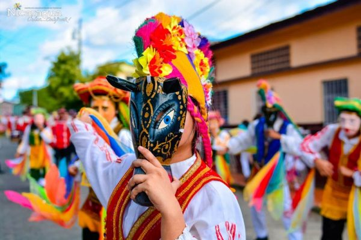

Tradición oral
La obra se abre con una danza. El Capitán Alguacil Mayor se dirige al Gobernador Tastuanes, quien se queja de la falta de lujos en su Cabildo Real, como una "mesa de oro, ni mantel bordado, ni tintero de oro". El Gobernador Tastuanes le pide al Alguacil que suspenda "los y robos, andanzas y mudanzas, velancicos y favoritismo" en el campamento de los Señores Principales. Además, le ordena que traiga ante él a un "farsante" llamado El Güegüense, a quien acusa de ser un "afrentador". El Alguacil le advierte al Gobernador que El Güegüense es un "sinvergüenza" y que será difícil traerlo. El Alguacil finalmente encuentra a El Güegüense y le transmite la orden del Gobernador de que se presente en el Cabildo Real. El Güegüense, sin embargo, se hace el desentendido, fingiendo ser sordo y confundiendo las palabras del Alguacil. Al escuchar que el Gobernador lo quiere "corriendo y volando", el Güegüense se burla y dice que, como un "pobre viejo lleno de dolores y calamidades", no puede hacer tal cosa. La obra se desarrolla a través de un juego de palabras intencionado donde El Güegüense confunde lo que el Alguacil le pide. El Alguacil le dice que para entrar a la presencia del Gobernador necesita pagarle un salario. El Güegüense finge que no oye bien y confunde las peticiones del Alguacil con:
* Pescados salados: cuando el Alguacil pide "salario".
* Redes de plato: cuando el Alguacil pide "reales de plata".
* Quesos duros: cuando el Alguacil pide "pesos duros".
* Doblar: cuando el Alguacil pide "doblones de oro y de plata".
Aprovechando su supuesta sordera, El Güegüense se queja de que en sus tierras "no se entiende de redes de platos, ni de pescados salados, ni de dobles", sino de "onzas de oro y monedas de plata".
Una vez ante el Gobernador, El Güegüense es acusado de haber entrado sin licencia. El Güegüense narra historias absurdas para justificar su presencia, como la de una "niña" que lo invitó a pasar a su casa. Luego, para congraciarse con el Gobernador, le ofrece sus supuestas riquezas, que incluyen "cajonería de oro, cajonería de plata, ropa de Castilla, ropa de contrabando, güipil de pecho, güipil de pluma, medias de seda, zapatos de oro".
El Gobernador, dudando de la veracidad de las riquezas, le pide a los hijos de El Güegüense que confirmen la información. Don Forcicio, el hijo legítimo, lo apoya y describe las supuestas riquezas de su padre. Sin embargo, Don Ambrosio, el hijo putativo, revela la verdad. Don Ambrosio expone la mentira, diciendo que el Güegüense solo espera la noche para "ahurtar lo que hay en las cocinas". También dice que su "cajonería de oro" es una "petaca vieja totolatera", y sus "zapatos de oro" son "unas chancletas viejas sin suela". El Güegüense reacciona con enojo y le pide a Don Forcicio que le "reviente la cabeza" a Don Ambrosio porque lo "desacredita".
A pesar de las revelaciones de Don Ambrosio, la obra continúa. El Gobernador le pide a El Güegüense que ofrezca "diestros bailes y zapateados" para divertir al Cabildo Real. El Güegüense accede y ofrece el baile del "San Martín" y el "son de Puerto Rico", haciendo que sus hijos bailen. El Gobernador se muestra satisfecho, pero El Güegüense insiste en que le falta la danza y zapateados del "Macho Ratón". La obra culmina cuando El Güegüense le propone al Gobernador un trato y contrato para casar a su hijo, Don Forcicio, con la hija del Gobernador, doña Suche Malinche. A pesar de la oposición del escribano, se concreta el matrimonio. La obra termina con un brindis por Castilla.
